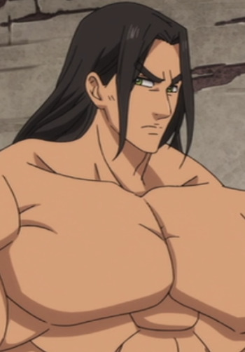
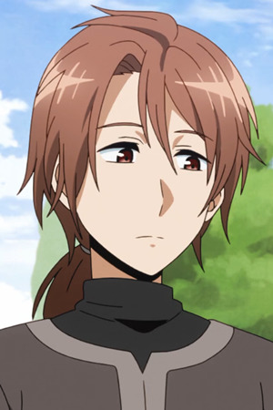

|
Akane Hoshi |
|
Akane Hoshi is a claymore-meister partnered with Clay. He is very reserved, intelligence and sociable. Akane is generally respectful to those he meets. |
|  |
Griamore |
- The Seven Deadly Sins
- The Seven Deadly Sins OVA
- The Seven Deadly Sins: Signs of Holy War
- The Seven Deadly Sins: Revival of The Commandments
|
Griamore is a Holy Knight who comes from a lineage of Holy Knight that have served the knight for years. He is loyal to Veronica Liones and her bodyguard. He is very tall and muscular individual who is at least twice the height of ordinary. |
|  |
Harth |
- Recovery of an MMO Junkie
|
Harth is a character that Yuuta created. |
 |
Satoshi Isshiki |
- Food Wars!
- Food Wars! OVA
- Food Wars! The Second Plate
- Food Wars! The Second Plate OVA
- Food Wars! The Third Plate
- Food Wars! The Third Plate: Totsuki Train Arc
|
Satoshi Isshiki is a student at Tootsuki Culinary Academy, a resident of Polar Star Dormitory and the 7th of the Elite Ten Council. He promotes a strong determination for his junior. He is benevolene and slack personality but a serious and cunning opponent. |
 |
Sting Eucliffe |
- Fairy Tail
- Fairy Tail (2014)
|
Sting Eucliffe is a mage from the guild Sabertooth. He uses White Dragon Slayer magic. Sting rarely loses his temper. |
 |
Yuta Sakurai |
- Recovery of an MMO Junkie
- Recovery of an MMO Junkie Special
|
Yuuta Sakurai is a half-British elite employee who works in a trading company. He is not good at socializing and is timid when he gets off work. Yuuta is a kind hearted man. |